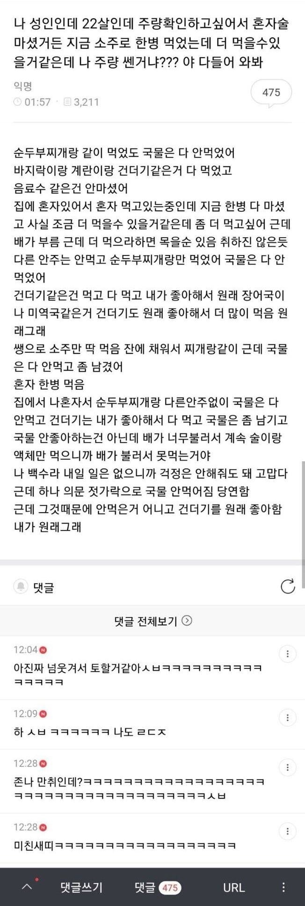
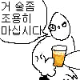

나 혼자 술 마셨거든
댓글
취했음 청년ㅋㅋㅋ
ㅋㅋㅋㅋㅋ 글에서 술냄새가 나냐 ㅋㅋㅋㅋㅋㅋㅋㅋ
내가 원래그래
짖 잘드럭ㅇ강나쇼
댕
ai로 비트깔고 목소리넣으면 한곡뚝딱임 ㅋㅋ
글에서 술냄새가 진동을 하는군 ㅋㅋㅋㅋㅋㅋㅋㅋㅋㅋㅋㅋㅋㅋㅋㅋㅋㅋㅋㅋㅋㅋㅋㅋㅋ
글 쓰면서 ㅈㄴ 고쳤을듯
ㅋㅋㅋㅋㅋㅋㅋㅋ
개만취 ㅋㅋ
이건 볼때마다 개웃기네 ㅋㅋㅋㅋㅋㅋㅋ

젓가락으로 국물 안먹어짐 당연함ㅋㅋㅋㅋㅋ
저 정도면 순두주찌개 건더기만 먹고 취한 거 아님?
개귀엽네 ㅋㅋㅋㅋㅋ
존나 취했네ㅋㅋㅋ